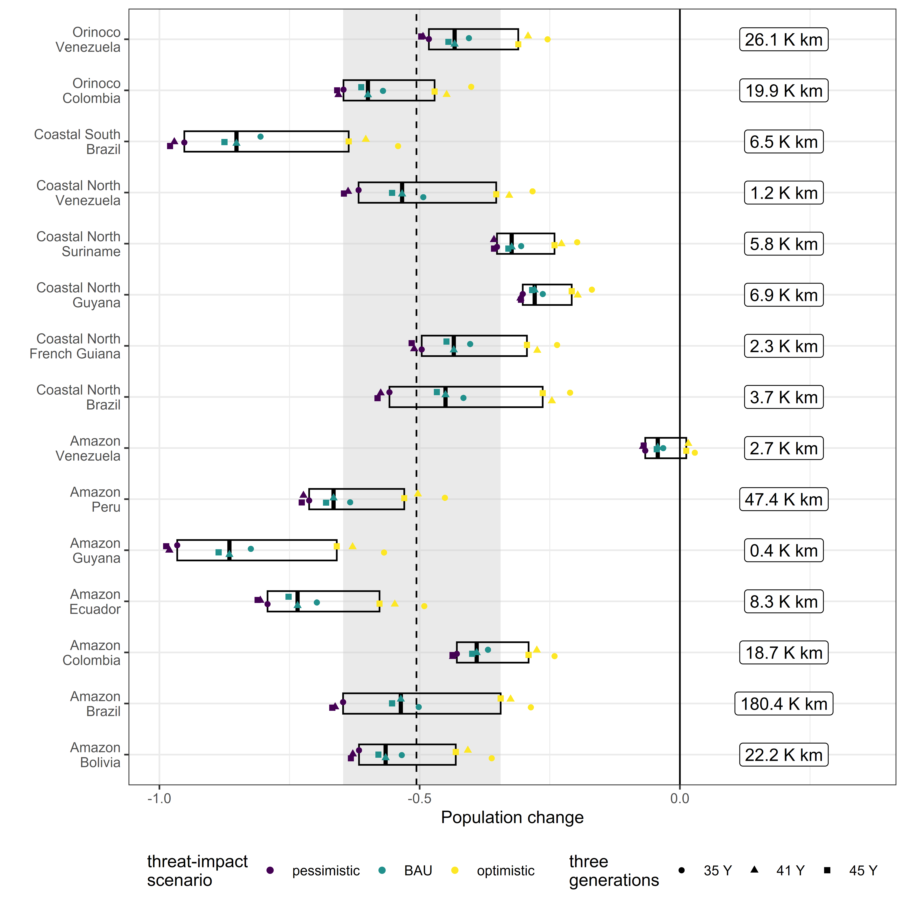

Matrix population model projections
Source:vignettes/a02_Matrix-population-model-projections.Rmd
a02_Matrix-population-model-projections.RmdOrganization
Split into three parts:
Projections
This section includes code and workflow used to calculate deterministic and stochastic population projections with stage-based Matrix Population Models.Scenario integration
This section integrates the population projections across spatially explicit conservation management scenarios.Results
Key findings and graphics of the results obtained.
Packages
The following packages are necessary to run the workflow, which integrates differrent data types, runs matrix population projections and produces results:
Projections
Section objectives
Projection parameters
Loads data frame with population parameters and explores the structure of stage-based matrix models.Projection models
Run deterministic and stochastic projections, combine results and export for future use.Model lookup
Summarise projection models and export for future use in scenario modelling.
Projection parameters.
Each row holds a unique set of parameters for a matrix population model. This reflects diverse recovery (conservation action) and extinction (threat) scenarios.
dt <- TACAR::pop01_param_poun()
# Population size constant.
nf <- 10
dt$adultF_n <- nf
# No data on density dependence for any South American freshwater turtle.
# Here include a generous 20% ceiling on maximum population increase.
ceiling_threshold <- nf + (nf * 0.2)| species | type | first_year | a1 | a2 | a3 | a4 | b1 | b2 | b3 | b4 | c1 | c2 | c3 | c4 | d1 | d2 | d3 | d4 | akey | adultF_n |
|---|---|---|---|---|---|---|---|---|---|---|---|---|---|---|---|---|---|---|---|---|
| Podocnemis unifilis | base | 0.0 | 0 | 0 | 0 | 10.74 | 0.0 | 0.33 | 0 | 0 | 0 | 0.17 | 0.29 | 0 | 0 | 0 | 0.11 | 0.93 | poun_base_0 | NA |
| Podocnemis unifilis | base | 0.1 | 0 | 0 | 0 | 10.74 | 0.1 | 0.33 | 0 | 0 | 0 | 0.17 | 0.29 | 0 | 0 | 0 | 0.11 | 0.93 | poun_base_0.1 | NA |
| Podocnemis unifilis | base | 0.2 | 0 | 0 | 0 | 10.74 | 0.2 | 0.33 | 0 | 0 | 0 | 0.17 | 0.29 | 0 | 0 | 0 | 0.11 | 0.93 | poun_base_0.2 | NA |
Each row can be easily converted for use in a stage-based matrix population model. The following code shows how the third row becomes a stage-based matrix.
stage_names <- c("a1", "a2", "a3", "a4",
"b1", "b2", "b3", "b4",
"c1", "c2", "c3", "c4",
"d1", "d2", "d3", "d4")
vpop <- unlist(dt[3 , stage_names])
pop_mat <- matrix(vpop, byrow = TRUE, ncol=4)
dimnames(pop_mat) <- list(c("_1", "_2", "_3", "_4"),
c( "a", "b", "c", "d"))| a | b | c | d | |
|---|---|---|---|---|
| _1 | 0.000000 | 0.000000 | 0.000000 | 10.741500 |
| _2 | 0.200000 | 0.333333 | 0.000000 | 0.000000 |
| _3 | 0.000000 | 0.166667 | 0.285714 | 0.000000 |
| _4 | 0.000000 | 0.000000 | 0.114286 | 0.930000 |
This matrix includes information of population growth, survival and reproduction.
We can show the different matrix components (growth, survival and reproduction) by converting to the structure recommended by COM(P)ADRE. COM(P)ADRE is a global scale online repository for matrix population models (MPMs) and metadata on plants, animals, bacteria, viruses, algae, and fungi. There are two R packages developed specifically to work with these MPMs: Rcompadre and Rage (Jones et. al. 2022, https://doi.org/10.1111/2041-210X.13792). For more details see: https://cran.r-project.org/web/packages/Rage/vignettes/a01_GettingStarted.html
The code below creates a compadre database object from the matrix at line 3 of the data.frame “dt”, created earlier by the function “pop01_param_poun”.
meta <- data.frame(idNum = 3,
SpeciesAccepted = dt[3 , 'species'],
type = dt[3 , 'type'],
first_year = dt[3 , 'first_year'])
stageInfo <- list(
data.frame(
MatrixClassOrganized = rep("active", 4),
MatrixClassAuthor = c("eggs/hatchling", "juvenile-early", "juvenile-late", "adult")
))
# Simple full A matrix
l_pop_mat <- list(mpm = pop_mat)
x <- Rcompadre::cdb_build_cdb(mat_a = l_pop_mat, metadata = meta, stages = stageInfo)
# Seperate into U (growth/survival), F (sexual reproduction), C (clonal reproduction)
mat_u1 <- rbind(
c(dt[3, 'a1'], dt[3, 'a2'], dt[3, 'a3'], 0),
c(dt[3, 'b1'], dt[3, 'b2'], dt[3, 'b3'], dt[3, 'b4']),
c(dt[3, 'c1'], dt[3, 'c2'], dt[3, 'c3'], dt[3, 'c4']),
c(dt[3, 'd1'], dt[3, 'd2'], dt[3, 'd3'], dt[3, 'd4'])
)
mat_f1 <- rbind(
c(0.0, 0.0, 0.0, dt[3, 'a4']),
c(0.0, 0.0, 0.0, 0.0),
c(0.0, 0.0, 0.0, 0.0),
c(0.0, 0.0, 0.0, 0.0)
)
mat_c1 <- rbind(
c(0.0, 0.0, 0.0, 0.0),
c(0.0, 0.0, 0.0, 0.0),
c(0.0, 0.0, 0.0, 0.0),
c(0.0, 0.0, 0.0, 0.0)
)
l_u <- list(m_u = mat_u1)
l_f <- list(m_f = mat_f1)
l_c <- list(m_c = mat_c1)
my_comadre <- Rcompadre::cdb_build_cdb(
mat_u = l_u, mat_f = l_f, mat_c = l_c,
metadata = meta,
stages = stageInfo
)Now we have the growth/survival and reproduciton matrixes, we can obtain many useful age related life history traits using functions in the package Rage (https://jonesor.github.io/Rage/).
The code below provides examples of generation time and life expectancy.
# the time required for a population to
# increase by a factor of R0 (the net reproductive rate)
Rage::gen_time(matU = matU(my_comadre)[[1]], matF(my_comadre)[[1]]) # 17.15
#> [1] 17.15455
# the average parent-offspring age difference # 16.22
Rage::gen_time(matU = matU(my_comadre)[[1]], matF(my_comadre)[[1]], method = "age_diff")
#> [1] 16.22243
# expected age at reproduction for a cohort 5.69
Rage::gen_time(matU = matU(my_comadre)[[1]], matF(my_comadre)[[1]], method = "cohort")
#> [1] 5.696541
Rage::life_expect_mean(matU = matU(my_comadre)[[1]], start = 1)
#> [1] 1.484286
# Add life expectancies of all stages to get overall longevity - 21.87 years
sum(Rage::life_expect_mean(Rcompadre::matU(my_comadre)[[1]], start = NULL))
#> [1] 21.87715We can also plot the life cycle diagram.
Rage::plot_life_cycle(matA = matA(my_comadre)[[1]],
stages = c("eggs/hatchling", "juvenile-early", "juvenile-late", "adult"))Projection models.
Here stage-based matrix population models are run using functions available in packages popbio, popdemo and Rage. A series of life history metrics are then calculated from the matrix population models using functions available in Rage (Jones et. al. 2022).
Deterministic models
Deterministic models have no density-dependence and the population matrix is constant (i.e., vital rates do not change overtime (timestep to timestep)). Below the function “pop03_doproj” calculates deterministic projections and summaries for the population matrixes stored in the data.frame “dt”, created previously with the function “pop01_param_poun” (see Norris et. al. 2019 for full details and justification of the life stages used).
# project
dout <- plyr::ddply(dt,
c("species", "type", "first_year","akey"), .fun = pop03_doproj)
dout$arun <- 1
# Model summaries
model_sum <- dout |>
group_by(species, type, first_year, lambda,
gen_time, gen_age_diff, life_exp, life_exp_adult, mat_prob, eggs_to_adult) |>
summarise(fem_t0 = max(fem_t0),
fem_min = min(fem),
fem_max = max(fem)) |>
ungroup()
lambda_n <- length(unique(model_sum$lambda)) # 50
lambda_mean <- mean(model_sum$lambda) # 0.9432
lambda_sd <- sd(model_sum$lambda) # 0.1506
lambda_min <- min(model_sum$lambda) # 0.4659
lambda_max <- max(model_sum$lambda) # 1.1539
# Export for future use
saveRDS(dout, "inst/other/dout.rds")Stochastic models
Stochastic matrix population models use matrices to represent
population dynamics, with the key feature of incorporating randomness or
variability in vital rates (e.g. survival). This randomness reflects the
inherent uncertainty and fluctuations in real-world systems, making
these models more realistic than their deterministic counterparts. Here
matrix switching is used to reflect variation in yearling survival over
time.
The matrix changes randomly at each iteration of the model to
incorporate random environmental and/or demographic variation. In the
code below, the function “pop03_doproj_stoch” calculates stochastic
projections and summaries for the population matrixes stored in the
data.frame “dt”, created previously with the function
“pop01_param_poun”.
# Stochastic
#data frame with runs for processing
#nruns <- 100 # 100 gives same pattern as 50
nruns <- 50
dt_stoch <- dt[rep(seq_len(nrow(dt)), nruns), ]
dt_stoch$arun <- rep(1:nruns, each = nrow(dt))
# Approx 90 - 120 minutes. 1,212,000 rows.
# Projections quick. Summaries across stochastic matrices slow.
# 19:41 - 21:42
dout_stoch <- plyr::ddply(dt_stoch,
c("arun", "species", "type", "first_year","akey"),
.fun = pop03_doproj_stoch)
table(dout_stoch$model)
table(dout_stoch$type)
model_sum_stoch <- dout_stoch |>
group_by(species, type, model, first_year, lambda, lambda_q75,
gen_time, gen_age_diff_med, gen_age_q75,
life_exp_med, life_exp_adult_med, mat_prob_med, mat_prob_q75,
eggs_to_adult_med, eggs_to_adult_q75) |>
summarise(acount = n(),
fem_t0 = max(fem_t0),
fem_min = min(fem),
fem_max = max(fem)) |>
ungroup()
# Export for future use
saveRDS(dout_stoch, "inst/other/dout_stoch.rds")Combine results.
dout <- readRDS("inst/other/dout.rds")
dout_stoch <- readRDS("inst/other/dout_stoch.rds")
# Combine data for plotting
dout_all <- dplyr::bind_rows(dout |> dplyr::select(arun, model, type, first_year,
akey, ayear,
lambda, gen_time, gen_age_diff,
life_exp, life_exp_adult,
mat_prob, eggs_to_adult,
fem, fem_t0, fem_diff, change50_flag,
change30_flag,
double_flag) |>
dplyr::mutate(lambda_lcl = NA, lambda_ucl = NA,
lambda_sd = NA, gen_sd = NA),
dout_stoch |> dplyr::select(arun, model, type, first_year,
akey, ayear,
lambda, lambda_lcl, lambda_ucl,
lambda_sd, gen_time, gen_sd,
gen_age_diff,
life_exp, life_exp_adult,
mat_prob, eggs_to_adult,
fem, fem_t0, fem_diff, change50_flag,
change30_flag,
double_flag))
# Limit adult female number to maximum (20% above original for baseline).
summary(dout_all$fem)
# Min. 1st Qu. Median Mean 3rd Qu. Max.
# 0 0 1 1389 11 16560701
dout_all[which(dout_all$fem > ceiling_threshold), 'fem' ] <- ceiling_threshold
# summary(dout_all$fem)
# Min. 1st Qu. Median Mean 3rd Qu. Max.
# 0.000000 0.005763 1.485889 4.522590 11.240127 12.000000
# Factors in right order
dout_all$modelf <- 1
dout_all[which(dout_all$model=="Stochastic uniform") , 'modelf'] <- 2
dout_all[which(dout_all$model=="Stochastic equal") , 'modelf'] <- 3
dout_all[which(dout_all$model=="Stochastic bad x2") , 'modelf'] <- 4
dout_all[which(dout_all$model=="Stochastic bad x4") , 'modelf'] <- 5
dout_all$modelf <- as.factor(dout_all$modelf)
levels(dout_all$modelf) <- c("Deterministic", "Stochastic uniform",
"Stochastic equal", "Stochastic bad x2",
"Stochastic bad x4")
unique(dout_all$modelf)
table(dout_all$modelf)
dout_all$typef <- 1
dout_all[which(dout_all$type=="female-hunt 2.5%") , 'typef'] <- 2
dout_all[which(dout_all$type=="female-hunt 5%") , 'typef'] <- 3
dout_all[which(dout_all$type=="female-hunt 10%") , 'typef'] <- 4
dout_all[which(dout_all$type=="female-hunt 25%") , 'typef'] <- 5
dout_all[which(dout_all$type=="female-hunt 50%") , 'typef'] <- 6
dout_all$typef <- as.factor(dout_all$typef)
levels(dout_all$typef) <- c("base", "female-hunt 2.5%",
"female-hunt 5%",
"female-hunt 10%", "female-hunt 25%",
"female-hunt 50%")
table(dout_all$typef)
# first year survival
dout_all$first_yearf <- as.factor(dout_all$first_year)
fylev <- paste("first-year\nsurvival\n", seq(0, 0.9, by = 0.1), sep = "")
levels(dout_all$first_yearf) <- fylev
# Export for future use. 17/6/2024 - 1,218,060 rows 21 columns.
saveRDS(dout_all, "inst/other/dout_all.rds")Model lookup
Derive model summaries to link with conservation management scenarios. The conservation management scenarios are used to help inform IUCN Red List and Green Status assessments.
Red List guidelines
“For example, upper and lower quartiles of the projected magnitude of the future reduction (i.e., reductions with 25% and 75% probability) may be considered to represent a plausible range of projected reduction.” (IUCN, 2024 - section 4.5.2, p38).Green Status Presence
Present when population is at least 1 as measured by lower quartile population.Green Status Viability
Viable when not declining: lower quartile of lambda >= 1. A species is considered viable in a spatial unit if application of the Regional Red List Guidelines to the population in the spatial unit would result in a categorization of ‘Least Concern’ OR ‘Near Threatened and Not Declining’.Green Status Functional
Functional when population lower quartile is 10 times base level.
The code below adds projection results to each of the matrix population models.
# load data. 14 August 2024 with 1218060 rows and 26 columns
dout_all <- readRDS("inst/other/dout_all.rds")
# 101 years, 5 model types (deterministic with 6060, stochastic with 6060 * 50),
# 6 harvest levels, 10 first year levels
# Make unique model ID. boot mean is same as mean (at least to 6 decimal places)
# 300 projection models.
model_ref <- dout_all |>
group_by(akey, modelf, typef, first_year, arun, lambda, gen_time,
gen_age_diff, life_exp, life_exp_adult, eggs_to_adult) |>
summarise(yc = length(unique(ayear))) |>
ungroup() |>
group_by(akey, modelf, typef, first_year) |>
summarise(count_runs = length(unique(arun)),
count_years = min(yc),
lambda_mean = mean(lambda),
lambda_min = min(lambda),
lambda_max = max(lambda),
lambda_sd = sd(lambda),
lambda_boot_lcl = Hmisc::smean.cl.boot(lambda)["Lower"],
lambda_boot_ucl = Hmisc::smean.cl.boot(lambda)["Upper"],
lambda_q25 = quantile(lambda, probs = 0.25, na.rm = TRUE),
lambda_q75 = quantile(lambda, probs = 0.75, na.rm = TRUE),
gen_mean = mean(gen_time),
gen_med = median(gen_time),
gen_min = min(gen_time),
gen_max = max(gen_time),
gen_sd = sd(gen_time),
gen_boot_lcl = Hmisc::smean.cl.boot(gen_time)["Lower"],
gen_boot_ucl = Hmisc::smean.cl.boot(gen_time)["Upper"],
gen_q25 = quantile(gen_time, probs = 0.25, na.rm = TRUE),
gen_q75 = quantile(gen_time, probs = 0.75, na.rm = TRUE),
gen_age_mean = mean(gen_age_diff),
gen_age_med = median(gen_age_diff),
gen_age_min = min(gen_age_diff),
gen_age_max = max(gen_age_diff),
gen_age_sd = sd(gen_age_diff),
gen_age_boot_lcl = Hmisc::smean.cl.boot(gen_age_diff)["Lower"],
gen_age_boot_ucl = Hmisc::smean.cl.boot(gen_age_diff)["Upper"],
gen_age_q25 = quantile(gen_age_diff, probs = 0.25, na.rm = TRUE),
gen_age_q75 = quantile(gen_age_diff, probs = 0.75, na.rm = TRUE),
life_exp_mean = mean(life_exp),
life_exp_med = median(life_exp),
life_exp_min = min(life_exp),
life_exp_max = max(life_exp),
life_exp_sd = sd(life_exp),
life_exp_boot_lcl = Hmisc::smean.cl.boot(life_exp)["Lower"],
life_exp_boot_ucl = Hmisc::smean.cl.boot(life_exp)["Upper"],
life_exp_q25 = quantile(life_exp, probs = 0.25, na.rm = TRUE),
life_exp_q75 = quantile(life_exp, probs = 0.75, na.rm = TRUE),
life_exp_adult_mean = mean(life_exp_adult),
life_exp_adult_med = median(life_exp_adult),
life_exp_adult_min = min(life_exp_adult),
life_exp_adult_max = max(life_exp_adult),
life_exp_adult_sd = sd(life_exp_adult),
life_exp_adult_boot_lcl = Hmisc::smean.cl.boot(life_exp_adult)["Lower"],
life_exp_adult_boot_ucl = Hmisc::smean.cl.boot(life_exp_adult)["Upper"],
life_exp_adult_q25 = quantile(life_exp_adult, probs = 0.25, na.rm = TRUE),
life_exp_adult_q75 = quantile(life_exp_adult, probs = 0.75, na.rm = TRUE),
eggs_to_adult_mean = mean(eggs_to_adult),
eggs_to_adult_med = median(eggs_to_adult),
eggs_to_adult_min = min(eggs_to_adult),
eggs_to_adult_max = max(eggs_to_adult),
eggs_to_adult_sd = sd(eggs_to_adult),
eggs_to_adult_boot_lcl = Hmisc::smean.cl.boot(eggs_to_adult)["Lower"],
eggs_to_adult_boot_ucl = Hmisc::smean.cl.boot(eggs_to_adult)["Upper"],
eggs_to_adult_q25 = quantile(eggs_to_adult, probs = 0.25, na.rm = TRUE),
eggs_to_adult_q75 = quantile(eggs_to_adult, probs = 0.75, na.rm = TRUE)
) |>
ungroup() |>
arrange(typef, first_year, modelf) |>
mutate(modelid = paste(akey, as.numeric(modelf), sep = "_"),
modelkey = row_number()) |>
relocate(modelkey, modelid)
# Estimates of generation time for summary.
# Bienvenu and Legendre (2015) https://doi.org/10.1086%2F681104 -
# defined as the mean age of mothers at birth.
# IUCN definition - is the mean age at which a cohort of individuals produce offspring.
gen_mean <- model_ref |>
filter(lambda_q75 >= 1, first_year < 0.5) |> pull(gen_age_mean) |> mean()
gen_median <- model_ref |>
filter(lambda_q75 >= 1, first_year < 0.5) |> pull(gen_age_mean) |> median()
gen_q25 <- model_ref |>
filter(lambda_q75 >= 1, first_year < 0.5) |> pull(gen_age_mean) |>
quantile(probs = 0.25)
gen_q75 <- model_ref |>
filter(lambda_q75 >= 1, first_year < 0.5) |> pull(gen_age_mean) |>
quantile(probs = 0.75)
gen_3 <- gen_mean * 3
gen_3_q25 <- gen_q25 * 3
gen_3_q75 <- gen_q75 * 3
# Add population changes.
model_ref2 <- model_ref |> left_join(dout_all |>
filter(ayear %in% c(ceiling(gen_3), ceiling(gen_3_q25), ceiling(gen_3_q75), 100)) |>
group_by(akey, modelf, typef, first_year, ayear, arun) |>
summarise(fem_t0 = mean(fem_t0),
femnew = mean(fem),
femnew_diff = mean(fem_diff)
) |>
ungroup() |>
group_by(akey, modelf, typef, first_year, ayear) |>
summarise(fem_t0 = mean(fem_t0),
fem = mean(femnew),
fem_sd = sd(femnew, na.rm = TRUE),
fem_q25 = quantile(femnew, probs = 0.25, na.rm = TRUE),
fem_q75 = quantile(femnew, probs = 0.75, na.rm = TRUE),
fem_diff = mean(femnew_diff),
fem_diff_sd = sd(femnew_diff, na.rm = TRUE),
fem_diff_q25 = quantile(femnew_diff, probs = 0.25, na.rm = TRUE),
fem_diff_q75 = quantile(femnew_diff, probs = 0.75, na.rm = TRUE)) |>
ungroup() |>
mutate(ayear = paste("t", ayear, sep="")) |>
tidyr::pivot_wider(names_from = ayear,
values_from = c(fem, fem_sd, fem_q25, fem_q75, fem_diff,
fem_diff_sd, fem_diff_q25, fem_diff_q75)) |>
arrange(typef, first_year, modelf)
)
# Add time to change by 50% and 30%
model_ref3 <- model_ref2 |>
left_join(dout_all |>
filter(change50_flag == 1) |>
group_by(akey, modelf, typef, first_year, arun,
change50_flag) |>
summarise(acount = n(),
change50_yf = min(ayear),
change50_yl = max(ayear)) |>
ungroup() |>
group_by(akey, modelf, typef, first_year) |>
summarise(change50_ymean = floor(mean(change50_yf)),
change50_ysd = sd(change50_yf),
change50_yq25 = floor(quantile(change50_yf, probs = 0.25, na.rm = TRUE)),
change50_yq75 = floor(quantile(change50_yf, probs = 0.75, na.rm = TRUE))) |>
ungroup()
) |> left_join(dout_all |>
filter(change30_flag == 1) |>
group_by(akey, modelf, typef, first_year, arun,
change30_flag) |>
summarise(acount = n(),
change30_yf = min(ayear),
change30_yl = max(ayear)) |>
ungroup() |>
group_by(akey, modelf, typef, first_year) |>
summarise(change30_ymean = floor(mean(change30_yf)),
change30_ysd = sd(change30_yf),
change30_yq25 = floor(quantile(change30_yf, probs = 0.25, na.rm = TRUE)),
change30_yq75 = floor(quantile(change30_yf, probs = 0.75, na.rm = TRUE))) |>
ungroup()
)
# Export for future use
saveRDS(model_ref3, "inst/other/model_lookup.rds")
write.csv2(model_ref3, "inst/other/model_lookup.csv", row.names = FALSE) Scenario integration
Section objective
Integrate point locations and population projections with conservation management scenarios.
Specifically:
- Join points with conservation management scenarios and population projections.
- Generate data used for summaries.
- Make summaries.
Join with scenarios
Load data: points, projection model lookup table and scenarios.
# point data
# load points made previously in prep_river_points.Rmd. RIVORD 1 to 5.
# Cropped to basins from Norris et. al. 2019.
ffr_1a5_poun_points_3395 <- sf::st_read(dsn = system.file("vector/poun_river_points_v2.gpkg", package="TACAR"),
layer = "ffr_1a5_poun_points_3395")
#> Reading layer `ffr_1a5_poun_points_3395' from data source
#> `/home/runner/work/_temp/Library/TACAR/vector/poun_river_points_v2.gpkg'
#> using driver `GPKG'
#> Simple feature collection with 353437 features and 52 fields
#> Geometry type: POINT
#> Dimension: XY
#> Bounding box: xmin: -8839379 ymin: -2162255 xmax: -4738776 ymax: 1094857
#> Projected CRS: WGS 84 / World Mercator
#HydroBasin codes made previously in prep_river_points.Rmd.
ffr_1a5_poun_points_hb_3395 <- sf::st_read(dsn = system.file("vector/poun_river_points_hb_v1.gpkg", package="TACAR"),
layer = "ffr_1a5_poun_points_hb_3395")
#> Reading layer `ffr_1a5_poun_points_hb_3395' from data source
#> `/home/runner/work/_temp/Library/TACAR/vector/poun_river_points_hb_v1.gpkg'
#> using driver `GPKG'
#> Simple feature collection with 353437 features and 17 fields
#> Geometry type: POINT
#> Dimension: XY
#> Bounding box: xmin: -8839379 ymin: -2162255 xmax: -4738776 ymax: 1094857
#> Projected CRS: WGS 84 / World Mercator
# quicker joining just data.
#geom column name
geocol <- attr(ffr_1a5_poun_points_hb_3395,"sf_column")
# join
ffr_1a5_poun_points_3395 <- ffr_1a5_poun_points_3395 |>
left_join(ffr_1a5_poun_points_hb_3395 |> data.frame() |>
dplyr::select(!tidyselect::all_of(geocol)))
#> Joining with `by = join_by(REACH_ID, BASIN_FLAG, SUBBASIN_FLAG, reach_id_point,
#> HYBAS_ID_l3, PFAF_ID_l3, SUB_AREA_l3, HYBAS_ID_l4, PFAF_ID_l4, SUB_AREA_l4,
#> HYBAS_ID_l5, PFAF_ID_l5, SUB_AREA_l5)`
# projections and scenarios
# model_lookup has results from 300 population projection models created previously
model_lookup <- readRDS(system.file("other/model_lookup.rds", package = "TACAR"))
# actions has scenarios for IUCN Red List and Green Status evaluations,
# with link to river points and associated projection models
actions <- readxl::read_excel(system.file("other/Podocnemis_conservation_actions.xlsx", package = "TACAR"),
sheet = "scenario_parameters", .name_repair = "universal")
#> New names:
#> • `Podocnemis modelling scenario` -> `Podocnemis.modelling.scenario`
#> • `Population perturbation parameter changes (BAU).` ->
#> `Population.perturbation.parameter.changes..BAU..`Now join.
# Here with 3 scenarios for each river point:-
# modelkey pessimistic, BAU, optimistic.
### 1060311 rows 6/8/2024
scenario_ffr_res <- ffr_1a5_poun_points_3395 |> data.frame() |>
#filter(subbasn == "Trombetas") |>
mutate(Protected = if_else(All == 1, "yes", "no"),
Protected_cat = case_when(Indigenous == 1 ~ "TI",
Strict == 1 ~ "SP",
myuse == 1 ~ "SU",
.default = "no"
),
Accessible = if_else(access_new == 0, "no", "yes"),
Free_flowing = if_else(CSI >= 0.92, "yes", "no")
) |> left_join(
actions |>
filter(Podocnemis.modelling.scenario == "Protection") |>
tidyr::pivot_longer(cols = starts_with("modelkey"), names_to = "model_name",
values_to = "modelkey") |>
left_join(model_lookup, by = join_by(modelkey == modelkey)
),
by = c("Protected" = "Protected", "Protected_cat" = "Protected_cat",
"Accessible" = "Accessible",
"Free_flowing" = "Free_flowing"),
relationship = "many-to-many"
) |>
filter(!is.na(lambda_mean)) |> # where points do not overlap new basins
mutate(flag_b = paste(BASIN_NAME, subbasin, sep="_"))
# should be zero rows if join worked.
test_join <- scenario_ffr_res |>
filter(is.na(lambda_mean)) |> nrow()
# This file is used in testmap. 1060311 rows, 169 columns 24/8/2024.
saveRDS(scenario_ffr_res, "inst/other/scenario_res_ffr1a5.rds")Results
Load and summarise data.
fin <- system.file("other/scenario_res_ffr1a5.rds", package = "TACAR")
scenario_ffr_res <- readRDS(fin)Make factors and other useful values.
# Make factors
scenario_ffr_res$model_namef <- factor(scenario_ffr_res$model_name)
#levels(scenario_ffr_res$model_namef)
scenario_ffr_res$model_namef <- relevel(scenario_ffr_res$model_namef, ref = "modelkey_pessimistic")
scenario_ffr_res$modelidf <- factor(scenario_ffr_res$modelid)
# scale value range
diff_min <- min(scenario_ffr_res$fem_diff_t45, na.rm = TRUE)
diff_max <- max(scenario_ffr_res$fem_diff_t45, na.rm = TRUE)A little test.
# Test with smaller subset.
df <- scenario_ffr_res |>
dplyr::filter(COUNTRY == "French Guiana")
# Unique groups
df |>
dplyr::group_by(COUNTRY, BASIN_NAME, reach_id_point,
model_name, modelkey, modelid, typef) |>
dplyr::summarise(acount = dplyr::n()) |>
dplyr::arrange(dplyr::desc(acount))
#> `summarise()` has grouped output by 'COUNTRY', 'BASIN_NAME', 'reach_id_point',
#> 'model_name', 'modelkey', 'modelid'. You can override using the `.groups`
#> argument.
#> # A tibble: 9,894 × 8
#> # Groups: COUNTRY, BASIN_NAME, reach_id_point, model_name, modelkey, modelid
#> # [9,894]
#> COUNTRY BASIN_NAME reach_id_point model_name modelkey modelid typef acount
#> <chr> <chr> <chr> <chr> <dbl> <chr> <fct> <int>
#> 1 French Gu… Coastal N… 60111852_1 modelkey_… 112 poun_f… fema… 1
#> 2 French Gu… Coastal N… 60111852_1 modelkey_… 62 poun_f… fema… 1
#> 3 French Gu… Coastal N… 60111852_1 modelkey_… 107 poun_f… fema… 1
#> 4 French Gu… Coastal N… 60111852_2 modelkey_… 112 poun_f… fema… 1
#> 5 French Gu… Coastal N… 60111852_2 modelkey_… 62 poun_f… fema… 1
#> 6 French Gu… Coastal N… 60111852_2 modelkey_… 107 poun_f… fema… 1
#> 7 French Gu… Coastal N… 60111852_3 modelkey_… 112 poun_f… fema… 1
#> 8 French Gu… Coastal N… 60111852_3 modelkey_… 62 poun_f… fema… 1
#> 9 French Gu… Coastal N… 60111852_3 modelkey_… 107 poun_f… fema… 1
#> 10 French Gu… Coastal N… 60111852_4 modelkey_… 112 poun_f… fema… 1
#> # ℹ 9,884 more rows
# Frequency distribution of river points among scenarios.
df |>
dplyr::mutate(modelidf = forcats::fct_reorder(modelidf, lambda_mean)) |>
dplyr::group_by(modelkey, modelidf, model_namef) |>
dplyr::tally() |>
tidyr::pivot_wider(names_from = model_namef,
values_from = n, values_fill = 0)
#> # A tibble: 5 × 5
#> # Groups: modelkey, modelidf [5]
#> modelkey modelidf modelkey_pessimistic modelkey_BAU modelkey_optimistic
#> <dbl> <fct> <int> <int> <int>
#> 1 12 poun_base_0.2_2 1216 1216 1250
#> 2 62 poun_female-hu… 0 34 765
#> 3 107 poun_female-hu… 799 1283 0
#> 4 112 poun_female-hu… 0 765 1283
#> 5 157 poun_female-hu… 1283 0 0Summarise population changes.
df_country_basin <- scenario_ffr_res |>
#dplyr::filter(BASIN_NAME == "Coastal North") |> # track why have 1 Coastal South
dplyr::filter(flag_exclude == 0) |>
dplyr::mutate(modelidf = forcats::fct_reorder(modelidf, lambda_mean),
basin_country = paste(BASIN_NAME, COUNTRY, sep ="\n")) |>
dplyr::group_by(basin_country, COUNTRY, BASIN_NAME,
model_namef) |>
dplyr::summarise(acount = dplyr::n(),
tot_t0 = sum(fem_t0),
diff_t35 = (sum(fem_t35) - sum(fem_t0)) / sum(fem_t0),
diff_t41 = (sum(fem_t41) - sum(fem_t0)) / sum(fem_t0),
diff_t45 = (sum(fem_t45) - sum(fem_t0)) / sum(fem_t0)
) |> dplyr::ungroup() |>
dplyr::filter(acount > 21) |>
tidyr::pivot_longer(cols = starts_with("diff_"), names_to = "gen_t3",
values_to = "fem_diff")
# Make weights. Below does not help.
#df_country_basin$wt <- df_country_basin$acount / sum(df_country_basin$acount)
# make sure to avoid these
# |>
# filter(length_river > 21) |>
# droplevels() |>
# Now get interquartile range for all.
df_iqr <- data.frame(
y = median(df_country_basin$fem_diff),
ymin = quantile(df_country_basin$fem_diff, probs = 0.25),
ymax = quantile(df_country_basin$fem_diff, probs = 0.75)
)
# Weighted interqantile range
mean_wt <- Hmisc::wtd.mean(x = df_country_basin$fem_diff,
w = df_country_basin$acount)
iqr_wt_25 <- Hmisc::wtd.quantile(x = df_country_basin$fem_diff,
w = df_country_basin$acount, probs = 0.25)
iqr_wt_75 <- Hmisc::wtd.quantile(x = df_country_basin$fem_diff,
w = df_country_basin$acount, probs = 0.75)
change_value <- round(abs(mean_wt) * 100, 1)
change_q25 <- round(abs(iqr_wt_25) * 100, 1)
change_q75 <- round(abs(iqr_wt_75) * 100, 1)
# Total river lengths
river_tot <- df_country_basin |>
dplyr::group_by(basin_country, COUNTRY, BASIN_NAME, acount) |>
dplyr::summarise(atmp = dplyr::n()) |>
dplyr::ungroup() |>
dplyr::mutate(length_label = paste(round((acount / 1000), 1), "K km"))
# How much does the Brazilian Amazon represent? Pull values.
river_totkm <- river_tot |>
dplyr::pull(acount) |> sum()
river_amazon_brazil <- river_tot |>
dplyr::filter(COUNTRY == "Brazil", BASIN_NAME == "Amazon") |>
droplevels() |>
dplyr::pull(acount) |> sum()
river_amazon_brazil_prop <- round(((river_amazon_brazil / river_totkm) * 100), 1)Findings
Within 3 generations, the adult female population is predicted to decline by 50.6% in the future (25 and 75% quantile range: 64.7 - 34.4 % decline).
-
This is a conservative (best-case) estimate.
Endangered (A3bd), is threfore a precautionary IUCN Red List assessment.- Important threats are not included (e.g. land use change Zalles et. al. 2021).
- Losses are potentially buffered by an overly generous 20% ceiling to increases in unaccesible/unhunted populations.
- Population projections use the earliest likely breeding age. The age at first reproduction was set to 5 years (Norris et. al. 2019).
- Hunting of adult females was limited to 10% per year in the most pessimistic scenarios.
- Hunting accessibility was limited to a distance of 48 km from locations with a human population density of 5 or more people per km2. This will underestimate impacts associated with threats such as large scale harvest around urban areas (Chaves et. al. 2021, Tregidgo et. al. 2017).
Plot to check
- Compare population changes across basin-country combinations.
Presenting the results visually can fascilitate a more detailed understanding of the patterns in the results.
The code below makes a figure with population change on the x-axis and basin-country combination on the y-axis. This avoids sqashing long names, which would happen if the basin-country combinations were plotted along the x-axis.
# Define function to calculate IQR at given quantiles
iqr = function(z, lower = 0.25, upper = 0.75) {
data.frame(
y = median(z),
ymin = quantile(z, lower),
ymax = quantile(z, upper)
)
}
stat_sum_df <- function(fun, geom="crossbar", ...) {
stat_summary(fun.data = fun, colour = "black", geom = geom, width = 0.4, ...)
}
# Plot points summarised with standard IQR
fig_basin_country <- ggplot2::ggplot(data = df_country_basin,
mapping = aes(x = basin_country, y = fem_diff)) +
#stat_summary(fun.data = iqr)
geom_hline(yintercept = 0, colour = "black") +
annotate(xmin=-Inf, xmax=Inf,
ymin = iqr_wt_25, ymax = iqr_wt_75,
fill="grey80", geom = 'rect', alpha=0.4) +
geom_hline(yintercept = mean_wt, colour = "black",
linetype = "dashed") +
stat_sum_df("iqr") +
geom_jitter(aes(shape = gen_t3, colour = model_namef),
width = 0.1, height = 0) +
scale_y_continuous(limits = c(diff_min, diff_max)) +
geom_label(data = river_tot,
aes(x = basin_country, y = 0.2, label = length_label)) +
coord_flip() +
scale_shape(name="three\ngenerations",
breaks=c("diff_t35", "diff_t41", "diff_t45"),
labels=c("35 Y", "41 Y", "45 Y")) +
scale_colour_viridis_d(name="threat-impact\nscenario",
breaks=c("modelkey_pessimistic", "modelkey_BAU", "modelkey_optimistic"),
labels=c("pessimistic", "BAU", "optimistic")) +
labs(y = "Population change", x = "") +
theme_bw() +
theme(legend.position = "bottom")
# Export for future use
png(file = "vignettes/fig_basin_country_summary.png", bg = "transparent",
type = c("cairo"),
width = 8, height = 8, units = "in", res=600)
fig_basin_country
invisible(dev.off())Check plot.

In the above figure a population change of “-0.5” is 50% loss. The shaded shapes show predicted population changes for each basin-country combination. The labels to the right show river lengths in thousands of kilometers (e.g. “22.2 K km” is 22,200 kilometers). The vertical dashed line shows the overall mean value, and the verticle grey shaded area is the interquartile range (IQR - 25% and 75% quantile values). As the basin-country combinations cover different sized areas, estimates of overall mean and IQR are obtained using calculations weighted by the river length.
Within each basin-country combination, the horizontal black crossbars show the median and interquartile range of projection scenarios. These scenarios represent the impact of threats (e.g. hunting) across three generations. The impact of threats ranges from most severe (“pessimistic”), Business-as-usual (“BAU”), to least severe (“optimistic”). Generation length was estimated from stage-based matrix population models (Bienvenu & Legendre, 2015). The scenario results include the mean (41 year), and the interquartile range of three generations (35 and 45 year, 25% and 75% quantile values respectively). Generation length estimation follows the IUCN definition: “Generation length is the average age of parents of the current cohort (i.e., newborn individuals in the population). Generation length therefore reflects the turnover rate of breeding individuals in a population….. Where generation length varies under threat, such as the exploitation of fishes, the more natural, i.e. pre-disturbance, generation length should be used.” (IUCN 2001, 2012).
The Amazon Basin in Brazil represents the largest proportion of rivers (51.2%). Considering the spatial variation in both threats and population genetics, it would probably be useful to include the Amazon Basin seperated into major basins (e.g. HydroBasin level 4 - Madeira, Negro, etc). But the summaries presented here provide a general overview and enable robust assessment of the results. Additionally, the overall patterns do not change if the Amazon basin is seperated further.
By country
The code below generates a summary by country using the same data as the basin-country comparison. For each country the mean and interquartile range is calculated, with estimates weighted by the river length within each basin.
df_river_couuntry <- river_tot |>
group_by(COUNTRY) |>
summarise(river_km = sum(acount))
df_wtd_country <- df_country_basin |>
group_by(COUNTRY) |>
summarise(mean_wtd = Hmisc::wtd.mean(x = fem_diff, w = acount),
iqr_wtd_25 = Hmisc::wtd.quantile(x = fem_diff,
w = acount, probs = 0.25),
iqr_wtd_75 = Hmisc::wtd.quantile(x = fem_diff,
w = acount, probs = 0.75))
df_wtd_country
#> # A tibble: 9 × 4
#> COUNTRY mean_wtd iqr_wtd_25 iqr_wtd_75
#> <chr> <dbl> <dbl> <dbl>
#> 1 Bolivia -0.528 -0.617 -0.431
#> 2 Brazil -0.511 -0.647 -0.344
#> 3 Colombia -0.466 -0.599 -0.390
#> 4 Ecuador -0.690 -0.792 -0.577
#> 5 French Guiana -0.401 -0.496 -0.294
#> 6 Guyana -0.289 -0.305 -0.208
#> 7 Peru -0.625 -0.712 -0.530
#> 8 Suriname -0.299 -0.351 -0.241
#> 9 Venezuela -0.372 -0.482 -0.292References
Bienvenu F, Legendre S. 2015. A new approach to the generation time in matrix population models. The American Naturalist. 185(6):834-43. https://doi.org/10.1086/681104.
Chaves, W.A., Valle, D., Tavares, A.S., Morcatty, T.Q. and Wilcove, D.S. 2021. Impacts of rural to urban migration, urbanization, and generational change on consumption of wild animals in the Amazon. Conservation Biology, 35: 1186-1197. https://doi.org/10.1111/cobi.13663
IUCN. 2001. IUCN Red List Categories and Criteria: Version 3.1. IUCN Species Survival Commission. IUCN, Gland, Switzerland and Cambridge, U.K.
IUCN. 2012. IUCN Red List Categories and Criteria: Version 3.1. Second edition. IUCN, Gland, Switzerland and Cambridge, UK. Available at www.iucnredlist.org/technical-documents/categories-and-criteria
IUCN. 2024. Guidelines for Using the IUCN Red List Categories and Criteria. Version 16. Prepared by the Standards and Petitions Committee. Downloadable from https://www.iucnredlist.org/documents/RedListGuidelines.pdf.
Jones OR, Barks P, Stott IM, James TD, Levin SC, Petry WK, Capdevila P, Che-Castaldo J, Jackson J, Römer G, Schuette C, Thomas CC, Salguero-Gómez R. 2022. Rcompadre and Rage - two R packages to facilitate the use of the COMPADRE and COMADRE databases and calculation of life history traits from matrix population models. Methods in Ecology and Evolution, 13, 770-781. doi:10.1111/2041-210X.13792.
Norris D, Peres CA, Michalski F, Gibbs JP. 2019. Prospects for freshwater turtle population recovery are catalyzed by pan-Amazonian community-based management. Biological Conservation. 233:51-60. https://doi.org/10.1016/j.biocon.2019.02.022
Stott, I. popdemo vignette: https://cran.r-project.org/web/packages/popdemo/vignettes/popdemo.html
Stott, I., Hodgson, D.J. and Townley, S. 2012. popdemo: an R package for population demography using projection matrix analysis. Methods in Ecology and Evolution, 3: 797-802. https://doi.org/10.1111/j.2041-210X.2012.00222.x
Stubben, C., & Milligan, B. 2007. Estimating and Analyzing Demographic Models Using the popbio Package in R. Journal of Statistical Software, 22(11), 1–23. https://doi.org/10.18637/jss.v022.i11
Tregidgo, D. J., Barlow, J., Pompeu, P. S., de Almeida Rocha, M., & Parry, L. 2017. Rainforest metropolis casts 1,000-km defaunation shadow. Proceedings of the National Academy of Sciences, 114(32), 8655-8659. https://doi.org/10.1073/pnas.161449911
Zalles V, Hansen Matthew C, Potapov Peter V, Parker D, et al. 2021. Rapid expansion of human impact on natural land in South America since 1985. Science Advances, 7: eabg1620. https://doi.org/10.1126/sciadv.abg1620